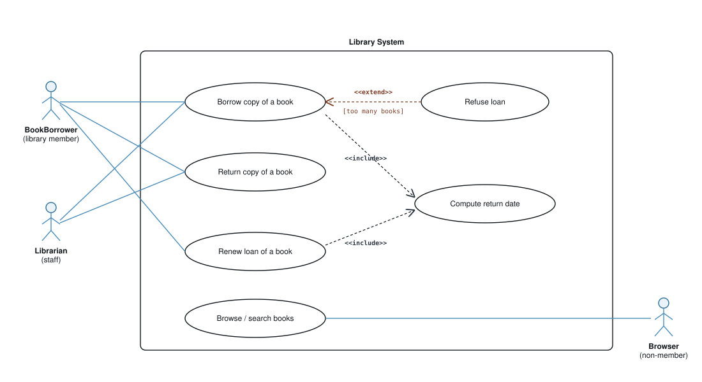
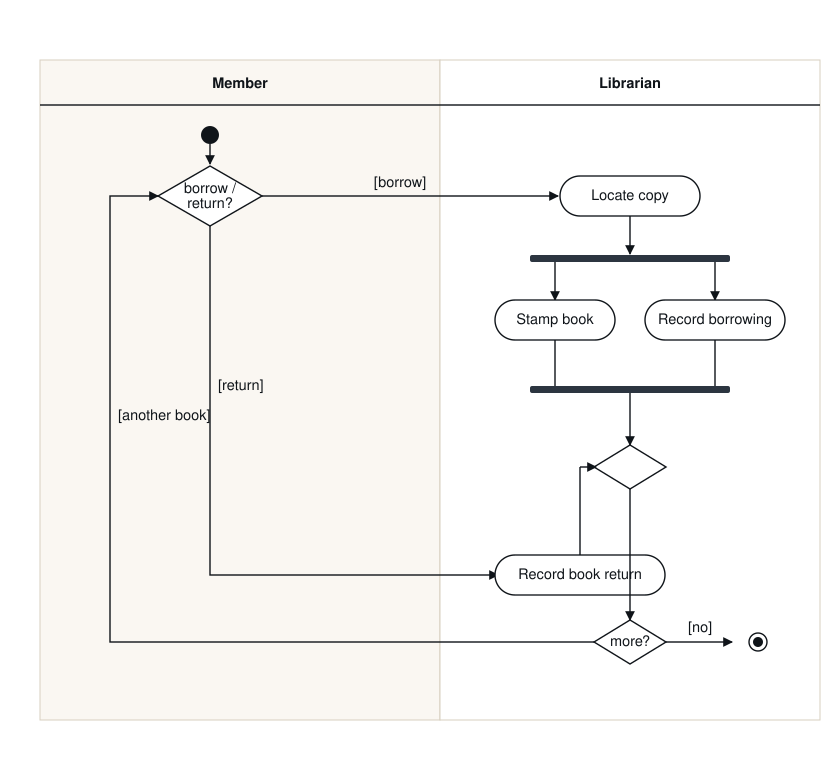

From the behaviour we have already modelled to the system's static structure: the classes, what they hold, and how they connect, read straight out of the requirements.
Move with the arrow keys or the buttons below.
We have built the two behavioural views: the use case diagram (who uses the system and what they can do) and the activity diagram (how one use case flows). The class diagram is the first structural view: the fixed cast of objects the behaviour acts on.
The two views are not separate work: the actors and entities of the use case diagram, the data a use case reads or writes, and the operations it needs all reappear here as classes, attributes and methods.
A class diagram is used when developing an object-oriented system model to show the classes in a system and the associations between them. An object class is a general definition of one kind of system object; an association is a link saying two classes are related. In early analysis, objects represent things in the real world: a patient, a prescription, a doctor, a book.
It is the longest-lived diagram on most projects: the static structure changes far more slowly than any one flow through it, so it is the artefact teams maintain and design against.
Before any details, here is a complete class diagram for a small library. Do not decode every symbol yet, the rest of the deck explains each labelled part. Keep returning to this picture: everything that follows is a piece of it.
Four classes (each a box of name / attributes / operations); a generalisation (StaffMember is a LibraryMember, the hollow triangle); an aggregation (a Book has copies, the diamond); an association with multiplicity (a member borrows 0..6 copies); and an association class (Loan, holding the borrow dates). Each one gets its own slide next.
Before any class is drawn you decide how to decompose the system. Adel's notes name three classic strategies; analysis-level class modelling usually blends them, but it helps to know which one you are leaning on.
Begin with the whole system, split it into subsystems, then into classes. Strong when the high-level architecture is already understood; the risk is inventing classes the requirements never asked for.
Begin with concrete domain things, a book, a copy, a member, and compose them upward. This is exactly what noun-verb analysis does, and it keeps the model anchored to the requirements text.
Begin with the few central concepts you are sure of, then work outward in both directions. Common in practice when one or two entities (Patient, Loan) clearly anchor the domain.
We work mostly bottom-up from the requirements, using the noun-verb method on the next slides, and sanity-check it against a top-down view of the whole. The goal is classes justified by the text, not by the developer's imagination.
A single class box has three compartments, and each maps to something you have already produced. This is the bridge from the behavioural views to the structural one.
Name compartment ← an actor/entity. Attributes ← the data the use cases touch. Operations ← the use cases that object performs. Every part of the class is justified by an earlier model.
Three compartments: name (top), attributes (middle), operations (bottom). Every attribute and operation carries a visibility marker; attributes and parameters carry a type after a colon.
The marker sits before the member name and records a design decision: who is allowed to touch this member. One BankAccount class shows all five at once.
Default to private data, public operations (encapsulation): the outside world calls methods and never reaches in to a field. Use protected (#) for what subclasses must reuse, package (~) for collaborators in the same module, and derived (/) for any value you can compute from others instead of storing, which removes a chance for the data to fall out of step. At analysis level keep it light (mostly public, no types); tighten visibility and add full signatures at design level.
Think of a house. public is the doorbell, anyone may ring it. private is your diary, only you read it. protected is a spare key the family shares (the subclasses). package is a key the other flats in your building hold (classes in the same module). derived is your age, nobody stores it, you work it out from the birth date on demand.
Two clarifications make the markers click. Both are exactly how Java, C#, C++ and UML define visibility.
Visibility says which code (which classes) may read or call a member, and the compiler enforces it. It is nothing to do with end-users or runtime permissions. A bank customer is a person, modelled as a separate Customer class, whose code may only call an account's public methods.
private means “any code written inside this class may use it, on any object of the class”, not only on this one. So one account can read another account's private balance, provided that code lives inside BankAccount.
class BankAccount {
- balance: Money // private to the class
+ transferTo(other: BankAccount, amt) {
this.balance = this.balance − amt
other.balance = other.balance + amt // LEGAL: 'other' is a BankAccount too
}
}
class StatementPrinter { // a different class
+ print(a: BankAccount) {
a.getBalance() // OK, getBalance() is public
a.balance // COMPILER ERROR, balance is private to BankAccount
}
}“Can one object touch another object's private data?” Yes, if they are the same class and the code sits inside that class (a transfer between two BankAccounts). No for any other class, which sees only the public operations. And / derived is a different axis altogether: it marks a value computed on demand, not a permission.
An analysis class abstracts one or more classes (and sometimes subsystems) of the eventual design. It models the problem domain, not the solution.
Phase 3 expects an analysis-level class diagram drawn from your requirements. Reserve the design-level detail (signatures, patterns, infrastructure) for later.
The standard recipe (Shlaer and Mellor, late 1980s): identify the data first, group it into classes, then attach behaviour. It keeps the model grounded in the requirements rather than the developer's imagination.
Nouns become classes and attributes; verbs become operations. The noun-verb pairings hint at the associations between classes.
Adel's running example. Underline the nouns in the requirement text, then sift them.
Book, BookCopy, Journal, LibraryMember, StaffMember
Library (the system itself), item (vague), three weeks / six / 12 (attributes or rules, not classes).
Noun-verb analysis gives candidates, not answers. For each one you argue keep, reject, or it depends, and the reasoning matters more than the verdict. Reasonable modellers differ on the rows marked “debatable”.
| Candidate | Decision | Why, and the alternative you rejected |
|---|---|---|
book | class | The work itself (ISBN, title). Why not merge it with its copies? One title has many physical copies, and you lend a copy, not the title , merging the two loses that distinction. |
copy | class | The physical item on the shelf (barcode, status). Keep only Book and you cannot say which of its three copies is on loan; BookCopy is the fix. |
journal | class (debatable) | Kept separate because journals follow different loan rules (staff only). Alternative: let Book and Journal both specialise an abstract LibraryItem holding the shared loan behaviour , tidier if more item types arrive. |
item | reject, but… | Too vague to be a class itself, yet it is the hint for that LibraryItem superclass. A rejected noun can still shape the model. |
loan / borrowing | association class | It looks like a verb, but it carries its own data (start and return dates) belonging to the member-copy pairing, not to either alone , so it becomes the Loan association class. |
member, staff | class + generalisation | Staff is-a member, so generalisation. Alternative: if one person can be both at once, model a Role rather than a subclass , a genuine design fork. |
library | reject | The system boundary, not a domain object , unless the requirements track several libraries, when it becomes a class after all. |
| three weeks, six, 12 | reject | Loan period and borrowing limits: attributes and constraints (multiplicities), not classes. |
A good class list is defended, not asserted. Be ready to say why BookCopy earns its place and library does not, and to name the alternative you considered , the LibraryItem superclass, the Role class , and why you set it aside.
The kept nouns become boxes. At this stage they are just named classes; the verb analysis then fills in operations, and the associations come next.
borrow, return, keep track of become operations such as borrow() / return() on the member classes and recordLoan() on the system. Assign each verb to the class responsible for it.
Relationships are connections between modelling elements: they describe how objects work together and act as a sanity check on the model. Four kinds carry almost all the weight.
| Relationship | Meaning | Notation |
|---|---|---|
| Association | A persistent link: one class holds, uses or refers to another. | plain line, with multiplicity at each end |
| Generalisation | One class is a more specific kind of another and inherits it (is-a). | solid line, hollow triangle pointing at the parent |
| Aggregation / composition | Part-of: one class is built out of others (part-of). | diamond at the whole, hollow (aggregation) or filled (composition) |
| Dependency | A transient "uses" link: a change in one may affect the other. | dashed line with an open arrowhead |
An association is a relationship between classes; a link is an instance of an association between two specific objects. Adel:LibraryMember linked to copy42:BookCopy is one link of the member-borrows-copy association.
Name an association with a verb phrase and read it in a direction. Navigability (the arrowhead) says which way access and flow can travel.
A plain association line is bidirectional. An arrowhead makes it unidirectional: the tail class can reach the head class, but not vice versa. Multiplicity sits at each end.
An association line can say more than “these two are related”. It can name the role each end plays, and a class can even be associated with itself.
An association connects classes – the type level. A link is one instance of it between two specific objects (Adel: “links instantiate associations”). The class diagram shows the associations; the object diagram (later) shows the links, e.g. sara:Employee manages omar:Employee.
Multiplicity on an association end answers: how many instances of this class can take part in the relationship at one time?
| Notation | Meaning |
|---|---|
1 | exactly one |
0..1 | optional: zero or one |
* or 0..* | zero or more |
1..* | one or more |
m..n | at least m, at most n (e.g. 0..6, 3..7) |
m | exactly m (e.g. 5, a chessboard has 64 squares) |
In the Library: a LibraryMember borrows 0..6 copies; a BookCopy is borrowed by 0..1 member at a time. Multiplicity is where business rules ("up to six items") enter the static model.
When one class is a more specific kind of another, draw a generalisation: a solid line with a hollow triangle pointing at the parent. The child inherits the parent's attributes, operations and associations, and adds its own.
The triangle always points at the general (parent) class. Use generalisation only for a genuine is-a: a StaffMember is a LibraryMember.
Wrong: “Car is-a Engine”. A car is not a kind of engine; it has one, so that is an association (Car has Engine), not inheritance. Right: “ElectricCar is-a Car”. The test is substitutability: anywhere the code expects a LibraryMember you can hand it a StaffMember and nothing breaks. If the substitution would be absurd (an Engine where a Car is expected), it is not generalisation.
Both say one class is built out of others. They differ in the lifetime of the part: the diamond sits at the whole.
Prefer composition where it fits: aggregation is semantically weak and many tools and reviewers cannot tell it apart from a plain association. Composition has real lifetime bite.
A Course is part of a Programme (aggregation, and a course may sit in more than one programme). An Airplane is made up of Assemblies, each made up of Components – aggregation can recurse. A chessboard is composed of exactly 64 Squares that cannot exist without it – composition, multiplicity 64 on the part end.
When an attribute belongs to the relationship rather than to either class, put it on an association class: a class box joined to the association line by a dashed link, sharing the association's name.
mark is not a property of the Student (they have many marks) nor of the Course (it has many) but of the specific Student-takes-Course pairing. A ternary association class does the same for a three-way relationship (e.g. Doctor-Patient-Treatment).
Adel's other running example, from Sommerville's mental-health-care patient management system. It shows a different shape: one central, attribute-rich class, Consultation, that anchors the whole model.
The most important class in a model is often not the actor but a central event or interaction. Consultation's attributes are the data one consultation records; its operations are what a doctor does during one (prescribe, recordNotes). The two associations read straight from the sentence “a doctor conducts a consultation that a patient attends”.
Two more notations from richer diagrams. A dependency (dashed open arrow) is a transient "uses" link, weaker than an association. Stereotypes in guillemets label a class's kind.
If an Order holds Products over time, that is an association (solid line). If a method merely takes a Product as an argument or calls it once, that is a dependency (dashed). Dependency is the weakest of the relationships.
A short checklist that reviews look for. Most weak class models fail on cohesion or coupling.
Prescription tells you what it is; Manager or Helper tells you nothing.Patient + name, dateOfBirth + register() + sendReminderEmail() // messaging + generatePdfReport() // reporting + connectToDatabase() // persistence + calculateInsurance() // billing
Four unrelated jobs in one class , four reasons to change. Touch the email server and you risk breaking billing.
Patient + name, dateOfBirth + register() + updateContact() // the rest moved out, to: NotificationService, ReportGenerator, PatientRepository, InsuranceCalculator
One job: be a patient. Each other concern lives in its own class. One reason to change.
The bad Patient above is an omnipotent class (low cohesion). The opposite failure is high coupling: a class wired to almost every other one, so any change ripples outward. Aim for the middle , each class doing one thing, linked only to what it truly needs.
Where a class diagram shows the types, an object diagram shows specific instances and the links between them at one moment, a snapshot. Object names are underlined, in the form name : Class.
Object diagrams validate the class model: building a concrete snapshot of real data quickly exposes a missing class, a wrong multiplicity, or an attribute that has nowhere to live.
The three diagrams are not separate exercises. Take a single description and watch the same words drive the use case diagram, then the activity diagram, then the class diagram.

The roles (“member”, “librarian”, anyone browsing) become actors; the things they do (“borrow”, “return”, “renew”, “browse”) become use cases; “compute the return date”, always part of borrowing, is an <<include>>; “refuse a loan when too many”, a conditional, is an <<extend>>.
Pick one use case, Borrow copy of a book, and unpack how it flows. Each action is a verb the system or an actor performs; the swimlanes record who does each.

The use case's normal and alternative paths become the activity's actions, decisions and loops: “locate copy”, “stamp book”, “record borrowing”, the “more?” loop for several books. Hold onto these verbs – locate, stamp, record, computeReturnDate – they become operations on the classes next.
The first diamond is a decision with named, domain guards [borrow] and [return] , not just yes/no. The two parallel bars are a fork then join: stamping the book and recording the loan happen together, and the join waits for both. The plain (unlabelled) diamond lower down is a merge, not a decision , a merge carries no guard; it simply re-joins the borrow and return branches so the decision is properly closed. The last diamond loops on [another book] or exits on [no]. Rule of thumb: a diamond with guards is a decision and must be matched by a merge; a diamond with none is that merge.
This is the diagram from the opening “at a glance” slide, now read against the description. The nouns are classes; the data they hold are attributes; the use cases and activity actions are operations; the noun-verb pairings are the associations.
The nouns become classes (Book, BookCopy, LibraryMember, StaffMember); the data become attributes (ISBN, title, barcode); the verbs become operations (borrow, return, computeReturnDate). “Staff are members” is generalisation; “a book has copies” is aggregation; “a member borrows copies” is the association whose dates live on the Loan association class; “up to six” is the multiplicity 0..6.
The traceability map. Every diagram element should be answerable to a phrase in the description – this table is how a reviewer, or you, checks that nothing was invented and nothing was dropped.
| Phrase in the description | Use case diagram | Activity diagram | Class diagram |
|---|---|---|---|
| “a library member”, “staff” | BookBorrower, Librarian (actors) | Member, Librarian (swimlanes) | LibraryMember, StaffMember (staff is-a member) |
| “books”, “copies”, “journals” | – (subjects of the use cases) | – (objects acted on) | Book, BookCopy, Journal (Book has 1..* copies) |
| “borrow a copy” | Borrow copy of a book | the borrow branch + its actions | borrow() operation; member–copy association |
| “for three weeks” / “return date” | Compute return date (<<include>>) | action inside the flow | Loan.startDate, returnDate, computeReturnDate() |
| “up to six items” | Refuse loan (<<extend>> [too many]) | a decision guard | multiplicity 0..6 on the borrows association |
| “browse or search” | Browse / search books (Browser actor) | – | a search() operation on the catalogue |
Read each row as one idea traced across all three views. If a class, use case, or action has no row, ask why it exists; if a description phrase has no entry, ask what you missed. That round trip is what makes the models trustworthy rather than decorative, and it is exactly what an examiner checks.
A class diagram tells you what exists; nothing about what happens.
is-a only for genuine specialisation; "has-a" and "part-of" are association and aggregation.is-a, aggregation / composition for part-of, association classes for relationship attributes.The class diagram tells you what exists; it says nothing about what happens. A call to borrow() on LibraryMember may touch Book, BookCopy, Loan and a persistence store in a specific order, with checks and error returns. That story, messages over time between a fixed cast of objects, is the sequence diagram, next.
Sources: A. Taweel, COMP433 Chapter 4 (UML) lecture notes (Library and MHC-PMS examples); Sommerville, Software Engineering 10th ed.; Booch et al., Object-Oriented Analysis and Design; Shlaer & Mellor (noun-verb analysis). Companion: COMP433_Ch4_UML_System_Modelling_Companion.html.